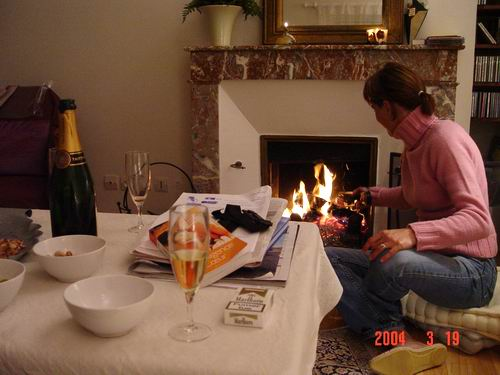
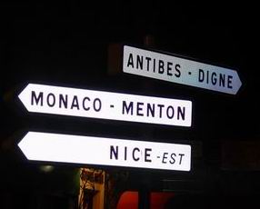
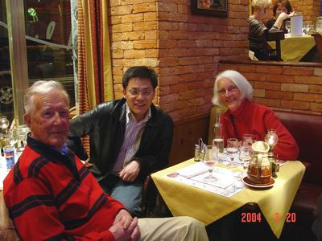
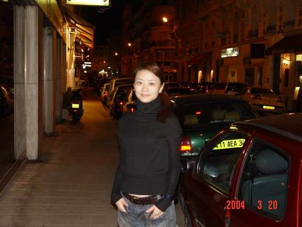
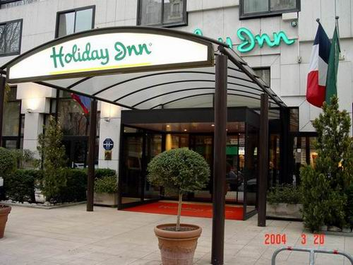
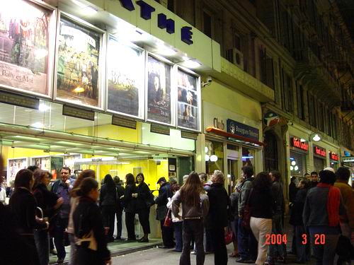
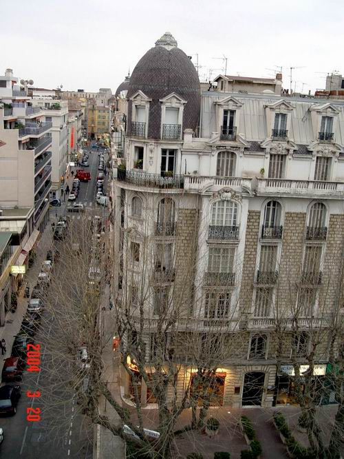

离开巴黎之后的两天完全与旅行无关，19日晚上被邀请到法国人家里做客，从国内出来第一次穿上那件橘红色的唐装配黑色裙子，黑色长统丝袜及黑色浅口鞋。法国人吃饭前先喝一段时间的香槟吃些小零食，同时大家聊聊天，过了半小时左右，到餐厅里去用餐，那天晚上女主人把鹅肝烧的有点糊，其他菜还比较可口。饭后，继续喝酒，男主人开了瓶1983年的酒，只需一点点就有那么股劲冲上来，加上之前喝的香槟和葡萄酒，身体开始逐渐地放松，放松......女主人年轻时候的照片比我看见的她还要漂亮，清纯中有妩媚和韧性，气质处于女人和女孩之间，会用眼神和你说话，内敛且不张扬，但又令你感受到跳跃的喜悦和激情，我真的很喜欢这类女子。11点多钟，我们起身告辞回到DAVID8年前住过的那间酒店，酒店老板还是原来那个人，过去生活中曾经熟悉的景物，令他惆怅不已。

漂亮温柔的女主人

3月20日早晨从住了一宿的小城乘火车到TOULOUSE，火车只有两节车厢，非常干净，然后从TOULOUSE转车到NICE，途中路过嘎纳（CANNES）。住在NICE离海岸不远的HOLIDAY INN，这是我们认为此行住的最好的酒店。尼斯（NICE） 以其全年温和的地中海气候，灿烂的阳光、悠长的石滩，以及裸体晒太阳的美女而闻名。有人这样形容尼斯：“尼斯是个懒人城、闲人城、老人城、无聊城。”这是个世人们渴望徜徉的度假胜地。我们发现尼斯的日本人比较多，不知道为什么？英语中有一个单词叫Frenchkiss，指情人之间的深吻。有一部好莱坞的电影，片名正是FrenchKiss，说的是一个美国女人为了追回已经变心的男友，只身来到法国，在飞机上遇到并爱上一个本质是好的法国小偷。片名用Frenchkiss有双关的含义，既指爱情故事，又表明与法国有关。片中的一句经典台词是:Nice is nice（这也是双关，一层意思是“尼斯这个城市很漂亮”，另一层意思是法语中的Nice和英语中的nice是同一个词）。
晚上步行到一家没有记下名字的餐厅吃饭，DAVID点了杯一升的啤酒喝，周围的人偶尔回过头来看着他笑，离我们最近的一对老夫妻笑眯眯地问他能喝得了吗？他说：“SURE，I AM A BIG DRINKER…...”后来我们和这对老夫妻边吃饭边聊天，由于他们的国家挪威冰雪覆盖，他们就到尼斯来度假。老爷爷85岁，老奶奶75岁，从事绘画艺术。他们曾在1982年作为民间文化交流团访问过中国的上海、北京、西安。听他们说起一些有关中国有趣的事情：

~~-与我们开心交谈的挪威老奶奶、老爷爷~~


-美味佳肴

~~-我在Nice夜晚的街道~~

 -我们居住的Nice Holiday Inn酒店
-我们居住的Nice Holiday Inn酒店
有趣一：当时他们访问上海一个美术学院，中国学生展示才艺，一个学生画鸟，一个学生画鱼，一个学生画山，另一个学生画水，并且令他们纳闷的是，这些学生都是专门画鸟，画鱼，画山或水的......这种教育方法让他们不能理解，很惊讶。
有趣二：1982年的中国商店或邮局等地方，工作人员会把钱款或票据用铁夹子夹住，顺着铁丝“嗖”的滑到某个方向，铁丝起着传输的作用，我们不禁想起小时侯见到的情形，忍俊不禁。
有趣三：同行里的一位女士由于天气热，脱下外衣，里面可能只穿了件衬衣没有戴文胸，结果接待他们的中国官员浑身不自在，满脸是汗，要求她把衣服穿上。他们很纳闷，难道天热还不能脱衣服吗？
有趣四：挪威发明的一项运动，现在成为冬季奥运会的参赛项目。这项运动的大致内容是运动员在雪上滑几百米，然后停下来，立刻要端起枪来射击，然后接着再滑、再射击......有个中国人每次参加都得冠军，而且这个中国人每次滑完停下来端起枪射击时，丝毫不喘，没有急速运动后的反应，他们惊讶怎么做到的？
这对夫妻有6个儿女，儿女的孩子结婚生子，现在这个家族共有100多人，他们现在没事就周游世界，说中国实在是太远，旅途的劳累是他们这个年纪无法承受的，他们恩爱的感觉令我们受到鼓舞，同时也为他们感到快乐！

~~-排队买电影票。当时《BIG FISH》的电影正在上映。~~
-Nice火车站

—Nice海边的方向
1 Responses to “法国南部”
2005-11-21
很漂亮的照片！
背景音乐也很棒，是谁的什么歌？
Leave A Reply
存档只读，评论已关闭。